Vijfentwintig jaar lang kansen gevonden om wagenpark-, magazijn- en transportactiviteiten te verbeteren. Bemhatech brengt diezelfde ervaring en innovatie naar advieswerk en naar de producten die het uitbrengt.
Producten
Wij bouwen gerichte SaaS-producten die specifieke problemen oplossen, direct te downloaden of te gebruiken.
Composed behandelt solliciteren als een adviespraktijk, niet als een cijferspel. Het vervangt lukraak solliciteren door outreach en positionering: op maat gemaakte sollicitatiebrieven, CV-scoring, matchanalyse, LinkedIn-optimalisatie en directe outreach, allemaal gebouwd vanuit je CV en lokaal draaiend op je eigen machine. Ik heb het gebouwd omdat hetzelfde instinct dat adviesopdrachten wint, zie de kans, benader dan met de oplossing, net zo goed werkt voor je eigen carrière.
Bezoek Composed →Meer uit de studio
Hetzelfde instinct, dichter bij huis: echte problemen die ik zelf ben tegengekomen. Een roman die ik aan het schrijven ben, en de bijbehorende soundtrack. Materiaal voor mijn eigen band, en een manier om het te promoten. Een certificering zonder goede voorbereidingstool. Een EV-roadtrip naar Spanje, met een huisdier aan boord.
Ik speel in een band en had materiaal nodig, dus bouwde ik een manier om originele nummers te genereren: songteksten, akkoorden en geproduceerde audio vanuit een briefing.
Ik heb altijd een roman willen schrijven. Loomwright coacht op structuur, de mens schrijft elke zin, en Songwright componeert de soundtrack.
Zet een afgewerkt Songwright-nummer om in een deelbare lyricvideo, gebouwd om de muziek van mijn band te promoten.
Ik wilde de CISM-certificering halen. Er was geen goede voorbereidingstool, dus bouwde ik er een. Groeit nu uit tot een algemeen examenvoorbereidingsplatform.
Ik reed met een EV naar Spanje met mijn huisdier en wilde daar een planner voor: route- en laadstopplanning die rekening houdt met reizen met een dier.
Diensten
Advieswerk gevormd door hetzelfde patroon gedurende vijfentwintig jaar: zie de kans om een activiteit te verbeteren, lever dan de oplossing door ervaring en innovatie.
Het patroon, in elke fase van mijn carrière
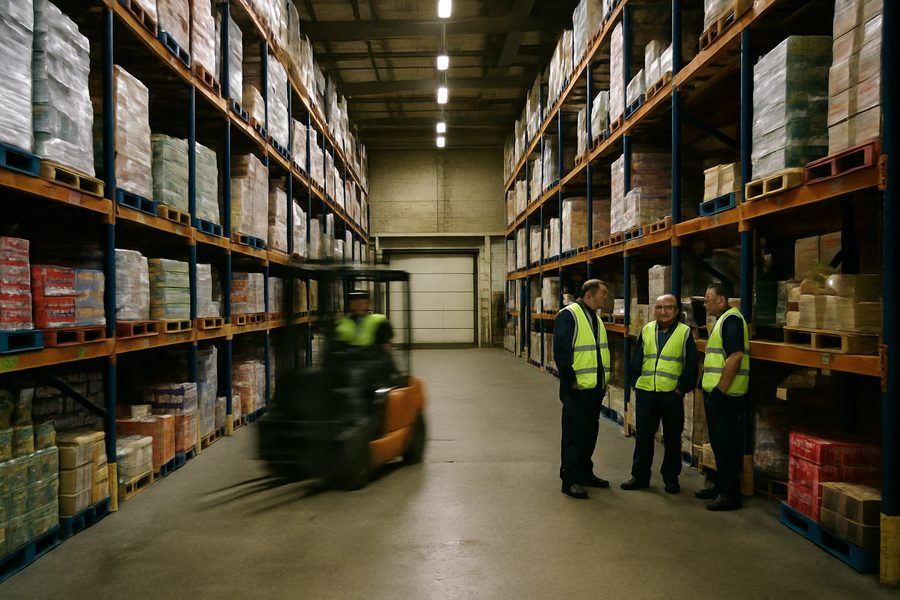
Kans Standaardiseer planning in Britse kruidenierswarendepots.
Innovatie Een planningsmodel landelijk uitgerold.
Resultaat Ondersteuning voor 600+ medewerkers die 1 miljoen+ dozen per week verwerken.
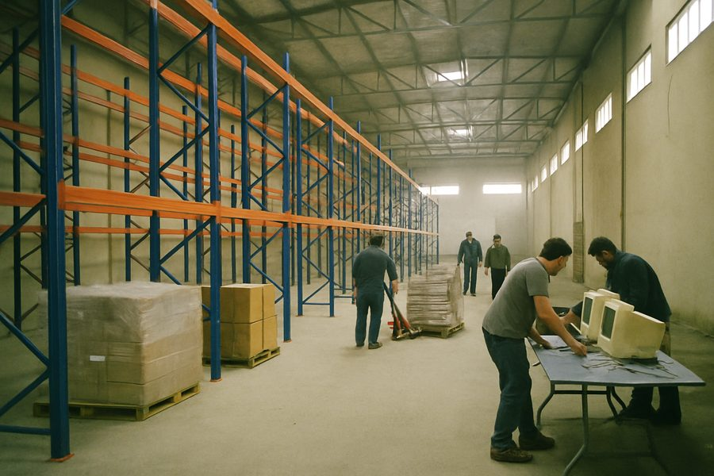
Kans Beiroet had een groter distributiecentrum nodig naarmate het bedrijf groeide.
Innovatie Ontwierp de faciliteit van 15.000 vierkante voet (ca. 1.400 m²) en leidde de opstart, met migratie van het magazijnsysteem naar Exceed WMS.
Resultaat Operaties die 40.000+ dozen per week verwerken vanuit de nieuwe faciliteit.
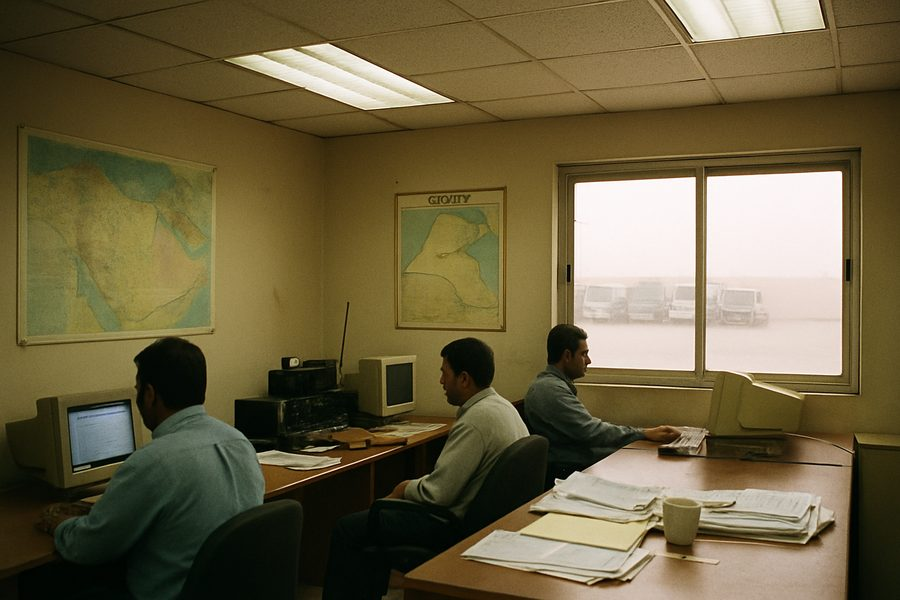
Kans Coördineer transporttoewijzing en wagenparkbeheer in Koeweit en de Golfregio.
Innovatie Het Micro Transport-systeem, als product owner, en een Fleet Control Centre met een team van 26.
Resultaat Gecentraliseerde controle over 7.000+ assets in de Golfregio en Irak.
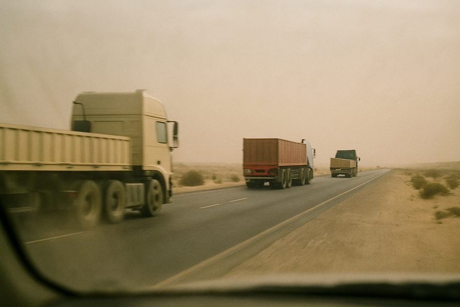
Kans Standaardiseer wagenparkactiviteiten in meerdere markten in het Midden-Oosten en Afrika.
Innovatie Een 'Fleet as a Service'-leveringsmodel, uitgerold vanaf Koeweit, Bahrein, Abu Dhabi, Qatar, Saoedi-Arabië en Soedan.
Resultaat TMS en best practices voor wagenparkbeheer bij 7.000+ assets in de hele regio.
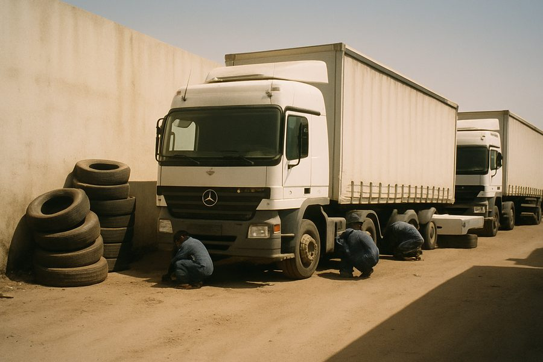
Kans Verlaag band- en onderhoudskosten voor een wagenpark van 180 voertuigen.
Innovatie Een bandenmanagementprogramma.
Resultaat 20% kostenreductie, wagenpark groeide 31% met behoud van efficiëntie.
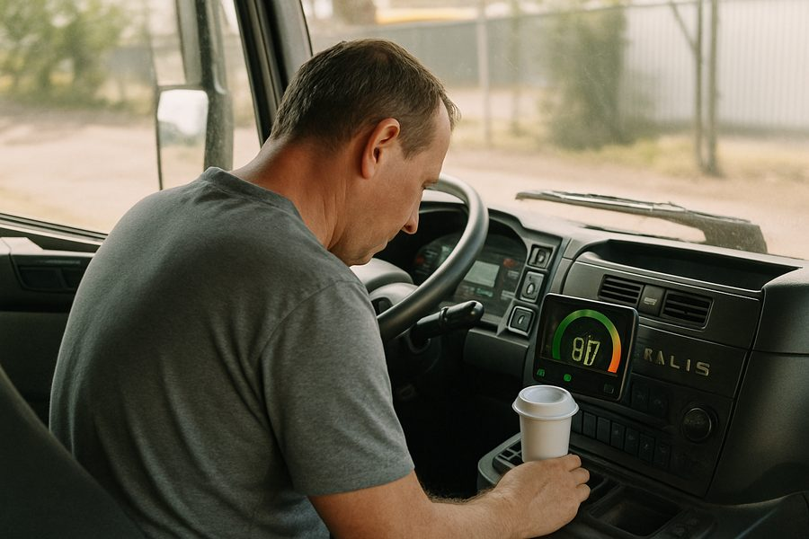
Kans Koppel rijgedrag direct aan brandstofkosten, en geef wagenparken een standaardmanier om bij OEM-truckdata te komen.
Innovatie De Driver Coach brandstofbesparingsfunctie, naast de eerste FMS OEM-integraties.
Resultaat Meetbare brandstofkostenreductie voor klanten, en het begin van een op standaarden gebaseerde OEM-integratiepraktijk.
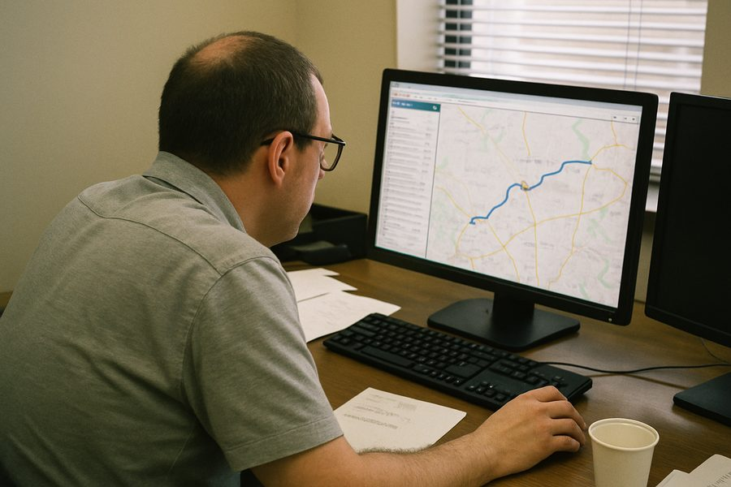
Kans Enterprise-wagenparken misten zowel geoptimaliseerde routering als een gemeenschappelijke manier om OEM-truckdata te integreren.
Innovatie Route-optimalisatiesoftware op enterprise-schaal, en zette het FMS-werk door naar de rFMS-standaard, met een bijdrage als lid van de DOITS-werkgroep.
Resultaat Gestandaardiseerde, schaalbare routering en OEM-data-integratie voor enterprise-wagenparkklanten.
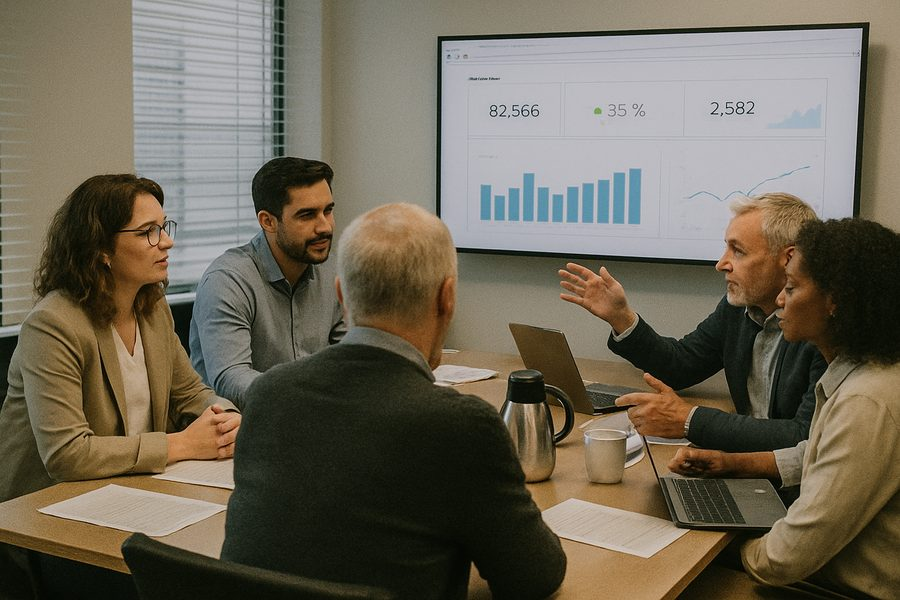
Kans Breng enterprise-wagenparkdata naar de tools die teams al gebruikten.
Innovatie Het Geotab Data Connector- en Dashboard Insights-platform.
Resultaat Native Power BI- en Tableau-integratie voor enterprise-klanten.
Van concept tot uitgebracht product: architectuur, bouw en release voor desktop- en web-SaaS.
Hands-on projectmanagement voor teams die leveren binnen een vaste scope of deadline.
Positionering, prioritering en roadmapwerk voor producten vóór of na lancering.
Proces- en systeemontwerp voor magazijnactiviteiten en distributienetwerken.
Advies over wagenparkplanning, routering en transportactiviteiten.
Ontwerp en uitrol van telematica- en voertuigdataprogramma's, van pilot tot wagenparkbreed.
Over
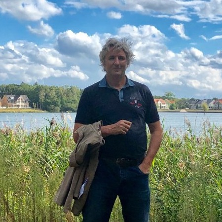
Ik ben Harry Butcher, oprichter van Bemhatech. Mijn carrière groeide in drie fasen, elk voortbouwend op de vorige.
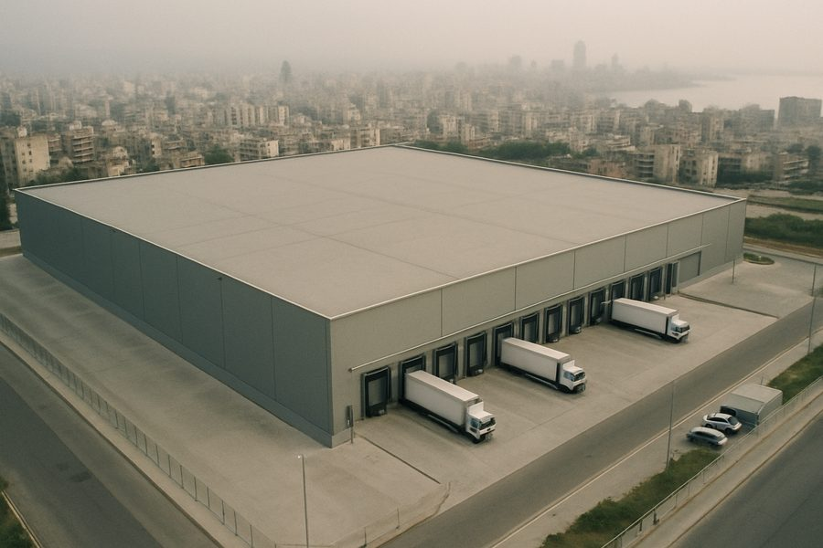
Bouwde planningsmodellen voor inkomende en uitgaande logistieke stromen in het VK, ontwierp daarna en leidde de opstart van een nieuw distributiecentrum in Beiroet, Libanon.
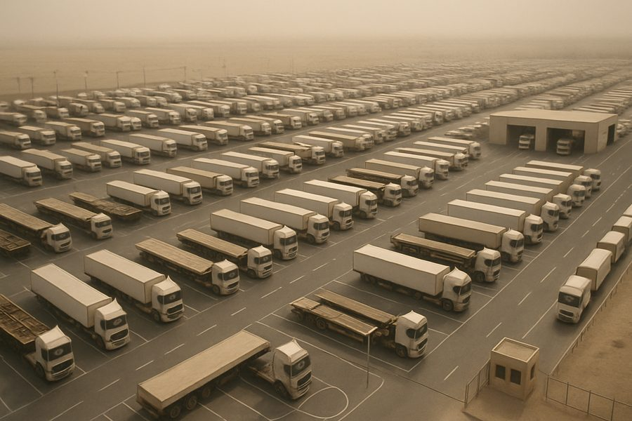
Regionale leiding over wagenpark en bedrijfsprestaties in het Midden-Oosten en Afrika, waaronder Koeweit, Bahrein, de VAE, Qatar, Saoedi-Arabië en Soedan, met beheer van 7.000+ assets.
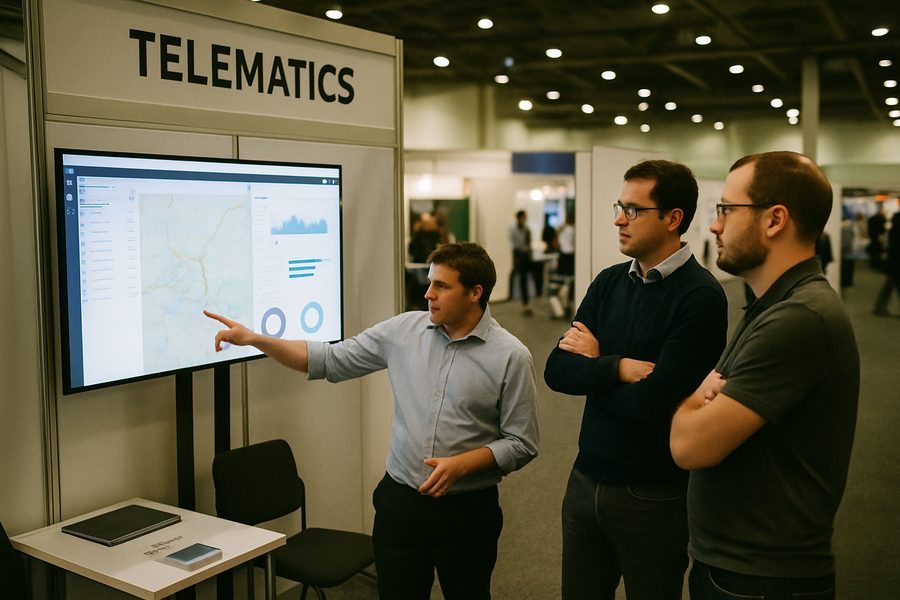
Productleiderschap bij Astrata (voorheen Qualcomm), Telogis / Verizon Connect en Geotab, met het bouwen van telematicasoftware die praktische wagenparkproblemen oplost.
De meeste telematica product managers hebben alleen ooit de software gekend. Ik heb zelf het wagenpark en de magazijnvloer beheerd, en daarna de SaaS-oplossingen gebouwd die ze draaiend houden, met agile als verbindende schakel.
Vijfentwintig jaar lang die ervaring opgebouwd in operaties en enterprise-software. Bemhatech is waar ik dat allemaal aan het werk zet, als advieswerk en als producten.
Heb je een project in gedachten of wil je meer weten over onze producten? Neem contact op. We reageren binnen één werkdag.
harrybutcher@hotmail.com →